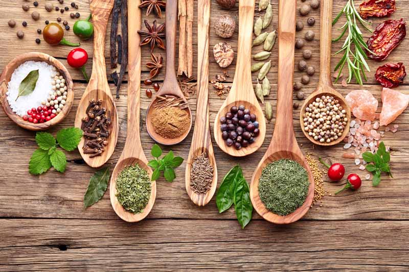
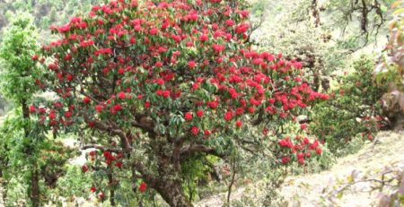

Horticulture – Uttarakhand
Horticulture includes fruits, flowers, vegetables, spices, and medicinal plants. It is practiced in both hilly and plain (Terai) regions and helps in increasing farmers' income.
Apple, Pear, Peach, Plum, Apricot, Walnut, Kiwi.
Example: Apple cultivation is mainly done in hilly regions like Nainital and Uttarkashi.
Rose, Marigold, Gladiolus, Carnation, Lily.
Example: Marigold is widely used in decoration and religious purposes.
Potato, Tomato, Cabbage, Cauliflower, Peas, Capsicum.
Example: Potato is an important cash crop in Uttarakhand.

Ginger, Turmeric, Garlic, Coriander.
Example: Ginger and turmeric are used in cooking as well as medicine.
Tulsi, Ashwagandha, Lemongrass, Mint, Jatamansi.
Example: Ashwagandha is widely used in Ayurvedic medicines.
Mushroom cultivation, Beekeeping.
Example: Beekeeping helps in honey production.
🍏 Fruit Categories in Uttarakhand
Fruits are classified based on climate and altitude. Different regions support different types of fruits.

Apple, Pear, Peach, Plum, Apricot, Cherry.
Example: Apple is mainly grown in high-altitude areas.
Citrus (Lemon group), Pomegranate, Guava.
Example: Guava grows well in moderate altitude areas.
Mango, Litchi, Banana, Papaya.
Example: Mango is widely grown in Haridwar and Terai regions.

Kafal, Hisalu, Kilmoda, Wild Fig (Bedu).
Example: Kafal is naturally found in forest areas.
🌲 Forests of Uttarakhand
Forest types vary with altitude and climate. Each forest type has different species of trees.
Sal, Teak, Shisham, Khair, Bamboo.
Example: Sal forests are found in Terai regions.
Chir Pine, Sal, Shisham, Semal.
Example: Chir Pine grows in mid-altitude areas.
Oak (Banj), Deodar, Rhododendron, Walnut.
Example: Deodar is a dominant tree in hilly regions.
Fir, Spruce, Birch (Bhojpatra), Juniper.
Example: Bhojpatra is found near higher altitudes.
Shrubs, grasses, medicinal plants.
Example: Bugyal grasslands are found in high-altitude areas.
🌾 Crop Classification (Agriculture – Uttarakhand)
Crops are classified based on seasons. Major types include Kharif, Rabi, and Mixed Cropping.
Rice, Maize, Finger Millet (Mandua), Barnyard Millet (Jhangora), Black Gram (Urad), Green Gram (Moong), Bhatt, Soybean, Sesame, Bottle Gourd, Okra, Pumpkin.
Example: Rice is mainly grown in Haridwar and Terai regions.
Wheat, Barley, Lentil, Gram, Peas, Mustard, Cauliflower, Carrot, Spinach.
Example: Wheat is grown during the winter season.
Growing multiple crops together to maintain soil fertility and reduce risk.
Examples: Maize + Rajma, Mandua + Pulses, Barahnaja system (mixture of 12 crops).
Testimonials

Horticulture Student
"The horticulture curriculum focusing on fruits, vegetables and medicinal plants of Uttarakhand is outstanding. Learning about apple cultivation in the hills has been incredibly practical and inspiring."

Agriculture Major
"The detailed classification of Kharif and Rabi crops, along with the Barahnaja mixed cropping system, has given me real-world knowledge that I can apply directly in Uttarakhand's farming communities."
Environmental Science Student
"Studying the forests of Uttarakhand — from tropical Sal to alpine Bugyals — has deepened my understanding of biodiversity and sustainable agriculture. The faculty makes these topics come alive."
Rural Development Student
"The practical focus on floriculture, spices and medicinal plants like Ashwagandha has prepared me to support local farmers and promote eco-friendly horticulture practices in the hills."